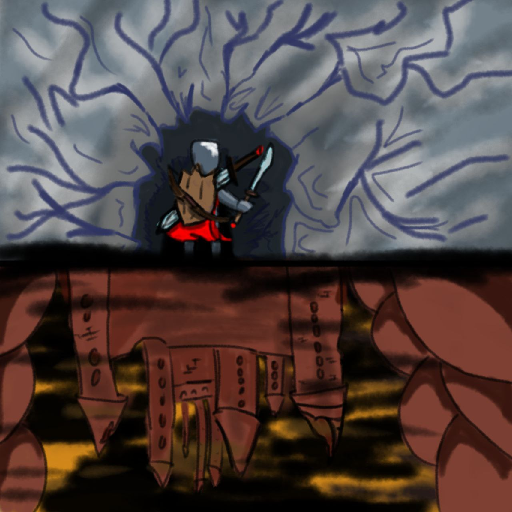

-
Into the Hell

2D-игра с видом сверху в жанре rogue like. Нет, это ни в коем случае не клон Soul Knight...
-
Описание
Игра представляет из себя типичный Rogue-like с видом сверху (2D). Игрок спускается в подземелья, начиная с холодных горных пещер, все ниже и ниже, пока не достигнет ада.
В игре всего представлено 3 локации:
- Горные пещеры - локация №1, с которой игрок начнет игру. Враги достаточно слабы по сравнению с игроком.
- Заброшенная шахта - локация №2. Враги сильнее по сравнению с локацией №1.
- Адский замок - локация №3. Враги сильнее по сравнению с локацией №2 и могут убить игрока с двух-трех ударов.
В комнатах локации могут присутствовать ловушки, которые будут мешать игроку в прохождении игры. Чем глубже игрок спускается в подземелье, тем больше ловушек будет расставлено в комнатах.
С врагов при убийстве падают монеты, которые подбирает игрок. В перерывах между зачисткой уровней игрок может прокачать свое вооружение и броню и купить расходники - зелья и взрывные стрелы.
-
Управление
- WASD - перемещение;
- Shift - рывок в сторону взгляда игрока;
- ЛКМ - обычная атака;
- ПКМ - альтернативная атака;
- H - лечение;
- E - взаимодействие с объектами.
-
Скриншоты
-
Как запустить
- Перейдите по ссылке ниже
- Скачайте .zip архив
- Распакуйте куда-нибудь
- Запустите Into the Hell.exe
- Готово!
-
Ссылки
Google drive Мануал к игре